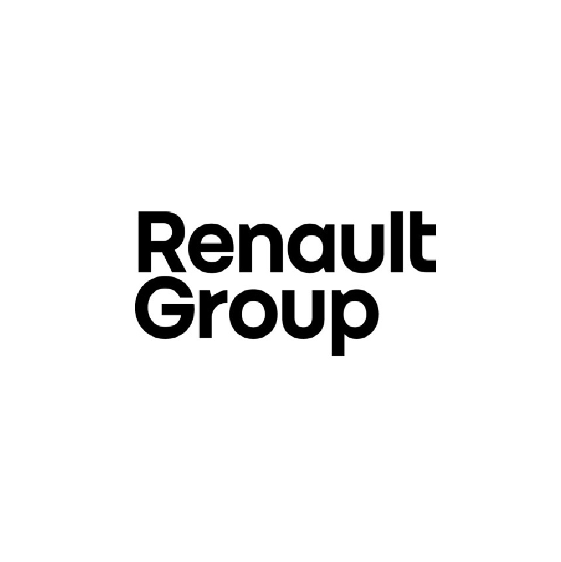
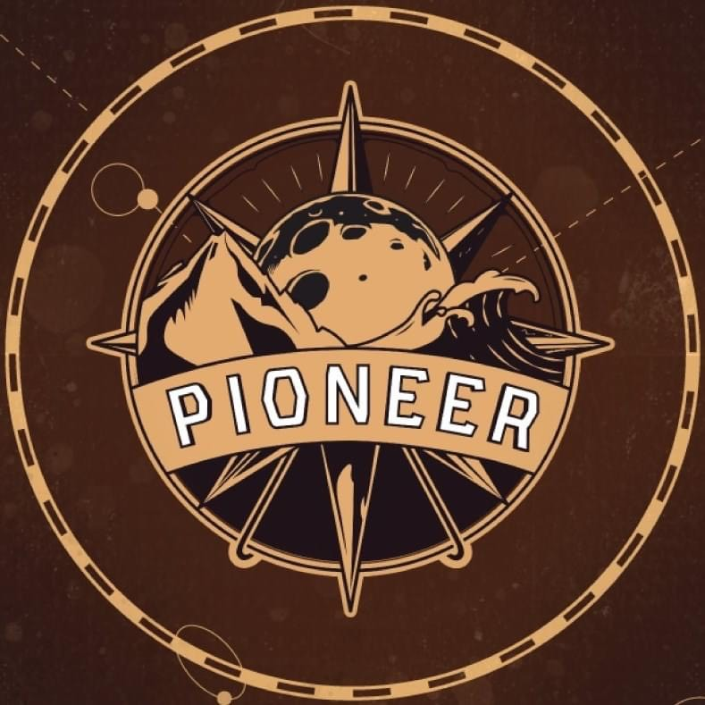
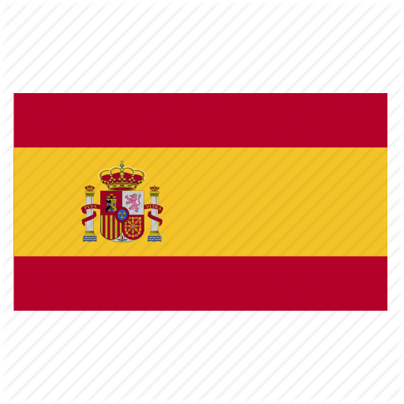

Ingénieur logiciel
- Analyse des besoins clients et cadrage fonctionnel.
- Conception et développement d'applications web.
- Coordination technique et produit.
- Interaction directe avec les clients.
- Structuration du code et amélioration continue.
Dashboards, applications internes et automatisations (n8n) conçus pour améliorer la visibilité, réduire les frictions et faire gagner du temps aux équipes.
Ingénieur logiciel et développeur fullstack, j’ai acquis une expérience concrète dans la conception, la maintenance et l’évolution d’applications internes, notamment chez Renault Group.
J’ai travaillé sur des outils métiers utilisés par des équipes opérationnelles : portails internes, applications de communication, dashboards et interfaces orientées usage. Mon approche consiste à comprendre les besoins réels des utilisateurs pour concevoir des solutions simples, efficaces et maintenables.
Aujourd’hui, je m’oriente vers des projets mêlant développement, vision produit et automatisation, avec l’objectif de créer des outils qui optimisent les processus et font gagner du temps aux équipes.
2017
2018
2021
2023
Des expériences orientées produit, développement fullstack et automatisation, avec un fil conducteur : comprendre le besoin métier, construire la solution et améliorer l'usage.


Des compétences variées allant du développement à la gestion de projet, en passant par le design.
Technologies
HTML 5/CSS 3
React
Android
FlutterFlow
PHP
Python
Java
C
Node
Bases de données
MySQL
PostgreSQL
SQL Server
MongoDB
Outils
Git
Visual Studio Code
Pack Office
Eclipse
Figma
Illustrator
Adobe XD
Photoshop
Automatisation
n8n
Conception de workflows
Intégration d’APIs
Création d’outils internes
Niveau B2

Niveau B2
Des applications internes et interfaces métier conçues pour simplifier les workflows, améliorer la visibilité opérationnelle et faire gagner du temps aux équipes.
Store interne centralisant les applications métier Renault pour simplifier l'accès et analyser leur usage.
Application interne Renault utilisée comme store d'applications métier accessible sur desktop, tablette et mobile.
Les utilisateurs perdaient du temps à retrouver leurs outils et aucune donnée ne permettait d'identifier les applications réellement utilisées.
Ajout d'un dashboard administrateur permettant de suivre les clics sur chaque application, filtrer les données par période et exporter les résultats.
Développement fullstack en autonomie : page admin, tracking des clics, filtres temporels, export Excel et amélioration UX.
HTML / CSS / PHP / MySQL / API REST
Meilleure visibilité sur l'usage des applications, aide à la prise de décision et gain de temps pour les utilisateurs.
Un projet web, une mission freelance ou une opportunité professionnelle? Parlons d'une solution claire, efficace et adaptée à vos objectifs.
Disponible pour missions freelance et collaborations tech